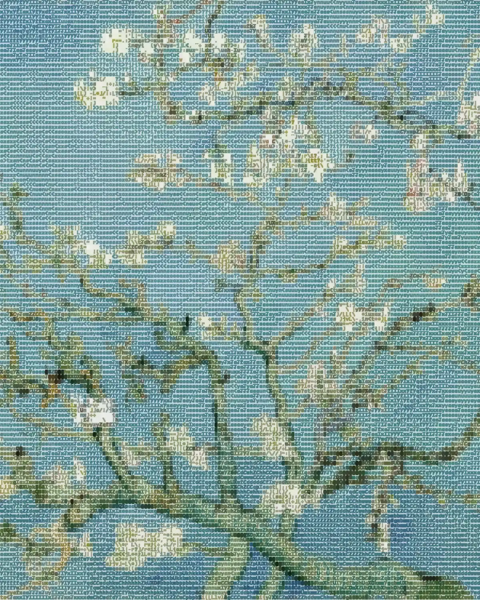

Seoul, 2026
Marc Duboc
Robotics & embedded systems engineer. I build machines, write essays and read with a pencil.
It’s late where you are.


Machines, systems & prototypes.
SmartChess
64 reed switches, a CNN that finds the board, and a chess engine running on a Raspberry Pi 5.
OAI 5G CU-DU split
OpenAirInterface on a Jetson Orin Nano and a Raspberry Pi 5, for lightweight UAV cells. Paper submitted, 2026.
Ball-collecting robot
Vision guidance and cascaded PI control, positioning within ±0.5–1 cm. Built solo during CPGE.
Nand2cpu
A 16-bit ALU from first principles, in Verilog. The testbench checks that 7 + 8 = 15.
Evento
Wallet-based ticketing on Solana Pay, built during a hackathon.
Built through theory. Tested in practice.
I’m a master’s student in the 3D Vision Lab at Seoul National University. Before that I was a research intern at KAUST, in the SeRBER lab, working on efficient vision models, NVIDIA Jetson deployment and a 5G testbed for UAV relay cells.
I like turning messy physical problems into deterministic hardware with clean software on top: robots, control loops, PCBs, firmware. STM32 and ESP32, embedded C and C++, FreeRTOS, KiCad and Altium, Verilog, OpenCV.
Trained at IMT Atlantique (embedded systems & robotics), after CPGE at Pierre Corneille (maths & physics).
Ideas in the margins.
And the books I keep recommending: the shelf, with a reading guide in English and français.
Let’s build something worth testing.
P.S. struck out: courage is contagious.
P.P.S.